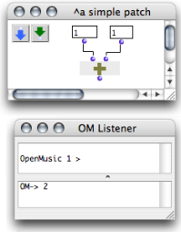
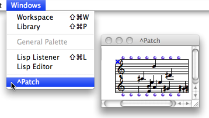

OpenMusic DocumentationHiérarchie de section : OM 6.6 User Manual > The OM Environment > Environment Windows
OpenMusic DocumentationHiérarchie de section : OM 6.6 User Manual > The OM Environment > Environment Windows
Navigation : page précédente | page suivante
Attention, votre navigateur ne supporte pas le javascript ou celui-ci à été désactivé. Certaines fonctionnalités de ce guide sont restreintes.
Windows of the OM Environment

|
The OM interface is declined through a set of windows and editors, which can be accessed through the
|
Workspace Window
The workspace is designed to host all files and folders related with the user's projects. To open or show the workspace window :
The Workspace and the Lisp Listener appear at the start of a session. |

|
Full information about the Workspace :
Reminder
The window of a new workspace always comes empty first. Material must be added there by the user.
Lisp Listener

The OM+ box performs an addition, whose result is given in the Listener.
|
The Listener is a Lisp communication interface : results of computations, warnings or error messages are displayed there. It also allows to send commands to OM, in other words, to evaluate Lisp expressions. User inputs are typed and interpreted in the upper part of the Listener window. Output messages are printed in the lower part of the window. To open or show a listener window :
|
More Information about the Lisp Listener :
Library Window
The Library window gives access to a whole set of preexistent programming items that are ready to use, as well as imported or user-defined elements. Items are located and organized within the Library in various packages[1]. To open the Library window :
|

|
Full information about the Library :
Other Windows
Programming items are represented in various window types. The Windows menu shows the name of any open window. Selecting a name brings the corresponding window to the foreground.

Preview : the Lisp Editor
The Lisp Editor is a Lisp programming interface which allows to edit and evaluate programs.
To open the Lisp Editor, go to Windows / Lisp Editor.

More Information about the Lisp Editor :
Références :
Package
Contains functions or classes components belonging to a common category of programming items. Packages are provided at the installation of OM, but the can also be loaded dynamically or added by the user.
Plan :
- OpenMusic Documentation
- OM 6.6 User Manual
- Introduction
- System Configuration and Installation
- Going Through an OM Session
- The OM Environment
- Environment Windows
- Preferences
- Workspace
- Library
- Tutorials
- Resources
- Visual Programming I
- Visual Programming II
- Basic Tools
- Score Objects
- Maquettes
- Sheet
- MIDI
- Audio
- SDIF
- Lisp Programming
- Errors and Problems
- OpenMusic QuickStart
Navigation : page précédente | page suivante
A propos...(c) Ircam - Centre Pompidou